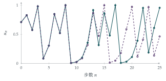

STEP I 2014，第 6 题
继续之前，请先阅读题目（原题为英文）。题目载于 STEP Support Programme 的题目资料库： step.maths.org/questions/14-s1-q6
引子
规则 \(u_{n+1} = ku_n(1 - u_n)\) 称为逻辑斯谛映射（logistic map），是描述资源有限的种群的最简单模型：\(u_n\) 是第 \(n\) 年的种群数量占环境所能承载的最大数量的比例，\(k\) 是繁殖率，而因子 \(1 - u_n\) 则代表过度拥挤的影响。1976 年，生物学家罗伯特·梅（Robert May）在《自然》（Nature）上发表了一篇短文，题为“Simple mathematical models with very complicated dynamics”（动力学行为非常复杂的简单数学模型）。他指出，当 \(k\) 逐渐增大至 \(4\) 时，这条只有一行的规则会由趋于稳定，变为来回振荡，再变为看似完全随机。它成为了混沌（chaos）理论的奠基例子之一。
混沌系统通常无法求解：\(u_n\) 没有公式，要求出 \(u_{100}\)，唯一的方法就是把它之前的各项逐一算出来。本题找到的正是那个例外。在 \(k = 4\) 这个最混沌的取值上，公式确实存在，而且它恰好解释了这个数列为何无法预测。
动笔之前
你以前在哪里见过 \(4s(1 - s)\) 这个式子，其中 \(s = \sin^2\theta\)？哪一条恒等式把 \(\sin^2\theta\)、\(\cos^2\theta\) 和 \(\sin 2\theta\) 联系起来？
若 \(s = \sin^2\theta\)，则 \(1 - s = \cos^2\theta\)，所以 \(4s(1 - s) = 4\sin^2\theta\cos^2\theta = (2\sin\theta\cos\theta)^2 = \sin^2 2\theta\)。映射 \(s \mapsto 4s(1 - s)\) 其实就是乔装了的倍角公式（double-angle formula）。
逐步解题
阶段 1 猜出规律
设 \(u_0 = \sin^2\theta\)，由上面的恒等式可得 \[u_1 = 4\sin^2\theta\cos^2\theta = \sin^2 2\theta, \qquad u_2 = 4\sin^2 2\theta\cos^2 2\theta = \sin^2 4\theta.\]
每一步之后，角度有甚么变化？你对 \(u_n\) 有甚么猜想？
角度每次都加倍，所以我们猜想（conjecture）\(u_n = \sin^2(2^n\theta)\)。
阶段 2 证明猜想
一个数列由“从一项到下一项”的规则定义，而我们要证明的命题涉及数列的每一项。哪一种证明方法最合适？
归纳法（induction）。命题在 \(n = 0\) 时成立，因为 \(u_0 = \sin^2\theta = \sin^2(2^0\theta)\)。假设对某个 \(n\) 有 \(u_n = \sin^2(2^n\theta)\)，则 \[u_{n+1} = 4\sin^2(2^n\theta)\bigl(1 - \sin^2(2^n\theta)\bigr) = \bigl(2\sin(2^n\theta)\cos(2^n\theta)\bigr)^2 = \sin^2(2^{n+1}\theta),\] 这正是 \(n + 1\) 时的命题。所以对所有 \(n \geq 0\)，都有 \(u_n = \sin^2(2^n\theta)\)。■
留意 \([0, 1]\) 内的每一个初始值 \(u\) 都可以写成 \(\sin^2\theta\)（取 \(\theta = \arcsin\sqrt u\)），所以对于 \([0, 1]\) 内的任何初始值，这个公式都解出了 \(k = 4\) 的逻辑斯谛映射。
阶段 3 变量代换
把 \(v_n = \alpha u_n + \beta\) 代入 \(v_{n+1}\) 的规则。你需要结果是 \(u_{n+1} = 4u_n - 4u_n^2\)。这会给出多少个条件？你又有多少个未知数？
代入后得 \[\alpha u_{n+1} + \beta = -p(\alpha u_n + \beta)^2 + q(\alpha u_n + \beta) + r,\] 所以 \[u_{n+1} = -p\alpha\, u_n^2 + (q - 2p\beta)\, u_n + \frac{-p\beta^2 + q\beta + r - \beta}{\alpha}.\] 要使它等于 \(4u_n - 4u_n^2\)，需要满足三个条件： \[p\alpha = 4, \qquad q - 2p\beta = 4, \qquad -p\beta^2 + (q - 1)\beta + r = 0.\] 头两个条件确定了 \(\alpha = 4/p\) 和 \(\beta = (q - 4)/(2p)\)。这时已经没有未知数剩下，所以第三条方程是对 \(p\)、\(q\) 和 \(r\) 的一个真正的条件。代入 \(\beta\) 并乘以 \(4p\)，得 \[-(q - 4)^2 + 2(q - 1)(q - 4) + 4pr = 0,\] 展开后得 \(-(q^2 - 8q + 16) + (2q^2 - 10q + 8) + 4pr = 0\)，即 \(q^2 - 2q - 8 + 4pr = 0\)，亦即 \[4pr = 8 + 2q - q^2. \qed\]
三条方程，却只有两个未知数：这就是出现条件的原因。你能否在未计算之前，就看出为甚么一般的二次映射不应该总是与 \((*)\) 等价？（想想线性的变量代换能改变甚么，又不能改变甚么。）
阶段 4 例子
对于 \(v_{n+1} = -v_n^2 + 2v_n + 2\)，我们有 \(p = 1\)、\(q = 2\)、\(r = 2\)，而 \(4pr = 8 = 8 + 4 - 4\)，所以条件成立。于是 \(\alpha = 4\) 及 \(\beta = -1\)，所以 \(v_n = 4u_n - 1\)，其中 \(u_n\) 满足 \((*)\)。由于 \(v_0 = 1\)，故 \(u_0 = \frac12 = \sin^2\frac{\pi}{4}\)，所以 \[u_n = \sin^2\!\Bigl(\frac{2^n\pi}{4}\Bigr), \qquad v_n = 4\sin^2\!\Bigl(\frac{2^n\pi}{4}\Bigr) - 1 = 1 - 2\cos\Bigl(\frac{2^n\pi}{2}\Bigr).\] 由此得 \(v_0 = 1\)、\(v_1 = 3\)，而对所有 \(n \geq 2\) 都有 \(v_n = -1\)。（直接验算：\(-1 + 2 + 2 = 3\)，然后 \(-9 + 6 + 2 = -1\)，再然后 \(-1 - 2 + 2 = -1\)。）■
这个初始值是特意选定的，好让角度落在 \(\pi\) 的倍数上，数列从此不再变化。这样一来，有趣的部分就被掩盖了，而那正是接下来要谈的。
回顾
识破乔装。一旦写成 \(s = \sin^2\theta\)，映射 \(s \mapsto 4s(1 - s)\) 就变成了角度加倍。
先猜想，再用归纳法证明。头两项提示了规律，归纳法则证明了它。
数一数方程和未知数。线性代换有两个自由参数，二次式有三个系数，所以必定剩下一个条件。
背后的数学
数列为何无法预测
公式 \(u_n = \sin^2(2^n\theta)\) 看来已是故事的结局：任何一项都可以直接算出。但请细看它说了甚么。由于 \(\sin^2\) 的周期（period）是 \(\pi\)，所以只有 \(2^n\theta\) 模（modulo）\(\pi\) 的值才有影响。设 \(\theta = \pi x\)，其中 \(0 \leq x < 1\)，并把 \(x\) 写成二进制（binary）： \[x = 0.b_1 b_2 b_3 \ldots \quad(\text{底为 } 2).\] 乘以 \(2\) 会把二进制小数点向右移一位，而把结果取模 \(1\)，就是丢掉越过小数点的那个数位。所以 \(u_n\) 只取决于 \(x\) 由 \(b_{n+1}\) 起的二进制数位。逻辑斯谛映射每走一步，就多读取初始值的一个数位，同时丢掉最前面的一个。
这就是对初始条件的敏感依赖（sensitive dependence on initial conditions），也是混沌的决定性特征。两个初始值若在首 \(20\) 个二进制位上相同（约六个小数位），它们产生的数列一般会在大约 \(20\) 步之内吻合，其后便毫无关系（图 8.7.1）。要预测 \(u_{100}\)，你需要知道 \(u_0\) 准确至 \(100\) 个二进制位。初始角度的任何误差，无论多小，每一步都会加倍。（种群数量 \(u\) 本身的误差并非每次都以完全相同的倍数增长，因为这个映射对 \([0, 1]\) 某些部分的拉伸比其他部分大，但平均而言，它的增长率是一样的。）公式帮不上忙：它只是令这个机制显现出来。

周期点无处不在
这个公式还能找出映射的每一个循环（cycle）。数列在 \(N\) 步之后回到初始值，当且仅当 \(\sin^2(2^N\theta) = \sin^2\theta\)，即 \(2^N\theta \equiv \pm\theta \pmod{\pi}\)。所以 \(\theta = m\pi/(2^N - 1)\) 或 \(\theta = m\pi/(2^N + 1)\) 给出一个周期整除 \(N\) 的点。例如 \(\theta = \pi/5\) 满足 \(4\theta \equiv -\theta\)，所以 \(\sin^2\frac{\pi}{5} \to \sin^2\frac{2\pi}{5} \to \sin^2\frac{4\pi}{5} = \sin^2\frac{\pi}{5}\) 是一个 \(2\)-循环。每一个周期都有对应的周期点（periodic point），而且它们在 \([0, 1]\) 中稠密（dense）：在每一个区间内，无论多小，都有一个初始值使数列重复出现。然而每一个周期点都是不稳定的，因为任何误差都会加倍。稠密的周期点，却把附近的一切都推开，这是混沌的第二个标志。
通往混沌之路
对于较小的 \(k\)，并没有公式可用，而数列的行为会随 \(k\) 剧烈变化（图 8.7.2）。当 \(1 < k < 3\) 时，每一个由 \((0, 1)\) 内出发的数列都会趋于不动点（fixed point）\(1 - 1/k\)。在 \(k = 3\) 时，不动点变得不稳定，由一个 \(2\)-循环取而代之（这是 STEP II 2002 Q5 的主题；见延伸练习）。在 \(k = 1 + \sqrt6 \approx 3.449\) 时，\(2\)-循环让位予 \(4\)-循环，然后是 \(8\)-循环，周期加倍来得愈来愈快，直至 \(k \approx 3.5699\) 时，循环的长度变成无限，混沌由此开始。在混沌区域之内还有一些有序的窗口：最明显的一个在 \(k = 3.83\) 附近，其中有一个 \(3\)-循环，那是 第 8.8 节 的主题。

1975 年，费根鲍姆（Mitchell Feigenbaum）在洛斯阿拉莫斯（Los Alamos）工作时，用一部可编程的袖珍计算机，量度了周期加倍时的各个 \(k\) 值：\(k_1 = 3\)、\(k_2 \approx 3.4495\)、\(k_3 \approx 3.5441\)、\(k_4 \approx 3.5644\)、…。他留意到这些间距以一个固定的倍数缩小， \[\frac{k_{n} - k_{n-1}}{k_{n+1} - k_{n}} \to 4.6692\ldots,\] 然后更令人惊讶地发现，同一个数 \(4.6692\ldots\) 也出现在 \(x \mapsto k\sin(\pi x)\) 之中，以及其他所有只有单一个峰、而峰顶像抛物线般圆滑（即二次极大值，quadratic maximum）的光滑映射之中。这个常数对这一整类映射是普适（universal）的；至于峰顶较平坦的映射，例如形状像 \(-x^4\) 的那种，则各有自己的普适常数。其后，人们在滴水的水龙头、受热的流体和电子电路的实验中都量度到这个常数。要解释个中原因，需要借用相变（phase transition）物理学的想法，而严格的证明要到 1982 年才由 Oscar Lanford 借助电脑完成。
同一招，用三次
第 (ii) 部分的代换是共轭（conjugacy）的一个例子：若一个变量代换能把一个映射变成另一个，这两个映射便称为共轭，而它们的动力学行为完全相同。本题证明了每一个满足该条件的二次映射，都与 \(k = 4\) 的逻辑斯谛映射共轭，而后者又通过 \(u = \sin^2\theta\)，成为乔装了的角度加倍。（严格来说，最后这一环是半共轭（semiconjugacy）：\(\theta\) 和 \(\pi - \theta\) 给出相同的 \(u\)，所以这个变量代换并非一对一（one-to-one）。逻辑斯谛映射真正共轭的对象是帐篷映射（tent map），即当 \(t \leq \frac12\) 时 \(t \mapsto 2t\)、当 \(t \geq \frac12\) 时 \(t \mapsto 2 - 2t\)，所用的代换是 \(u = \sin^2\frac{\pi t}{2}\)，它在 \([0, 1]\) 上是一对一的。）在 第 2.8 节 中，你遇过 \(x \mapsto x^2 - 2\)，它由 \(x = 2\cos\theta\) 解出，角度每一步加倍；它同样满足该条件（不妨试试）。所以这些全都是同一个映射的不同乔装。在 第 8.8 节 中，这个家族的第三位成员将会登场：一个由直线构成的映射，即帐篷映射。
思维技巧
一个好的代换可以把复杂的规则变成简单的规则。设法找出一个变量代换，把问题变成你已经明白的问题。
在这里，\(u = \sin^2\theta\) 把一个二次映射变成了角度加倍，而一个线性代换则把一整族二次式归结为一个。在大学里，共轭是一件核心工具：在动力系统（dynamical systems）中，在线性代数中（把矩阵对角化，就是选取一组令它变得简单的坐标），以及在群论中，都是如此。
延伸练习
逻辑斯谛映射的循环。试做 STEP II 2002，第 5 题。然后证明只有当 \(k > 3\) 时才存在 \(2\)-循环。
平方减二。证明 \(v_{n+1} = v_n^2 - 2\) 满足第 (ii) 部分的条件（把它写成 \(-pv_n^2 + qv_n + r\)，其中 \(p = -1\)）。求 \(\alpha\) 和 \(\beta\)，并验证你的答案与 \(v_n = 2\cos(2^n\phi)\) 一致。
一个 \(3\)-循环。利用公式 \(u_n = \sin^2(2^n\theta)\)，求 \(u_{n+1} = 4u_n(1 - u_n)\) 的一个 \(3\)-循环。（提示：试试 \(\theta = \pi/7\)，或 \(\theta = \pi/9\)。）周期恰好为 \(3\) 的点有多少个？
丢失数位。电脑储存数字时，大约准确至 \(53\) 个二进制位。如果你在电脑上迭代 \(u_{n+1} = 4u_n(1 - u_n)\)，大约多少步之后，计算出来的值便与真正的数列毫无关系？到那时，计算出来的数列是否就没有用处？
延伸阅读
Robert May，“Simple mathematical models with very complicated dynamics”，Nature 261 (1976)。经典之作，至今仍然十分易读。
James Gleick，Chaos: Making a New Science（Penguin）。讲述梅、费根鲍姆以及混沌被发现的故事。
Steven Strogatz，Nonlinear Dynamics and Chaos（CRC Press），第 10 章。一维映射、逻辑斯谛映射和费根鲍姆常数，程度相当于大学一年级。
Ian Stewart，Does God Play Dice?（Penguin）。一本介绍混沌的科普读物，其中有一章对逻辑斯谛映射讲解得很好。